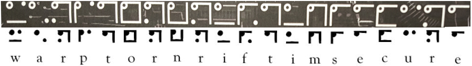
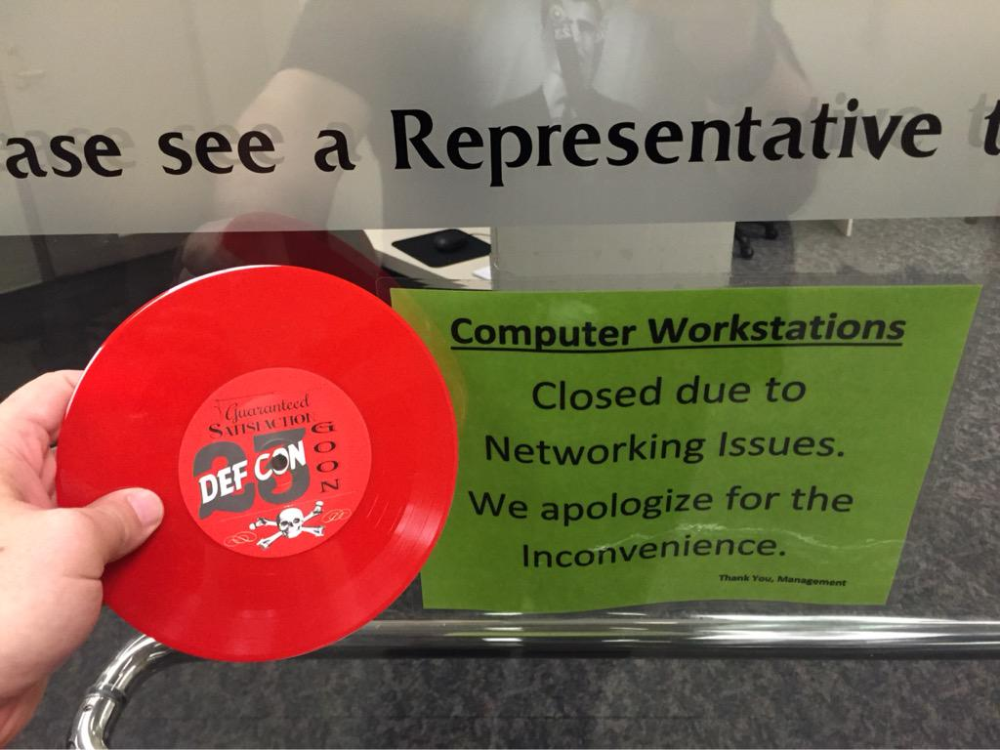
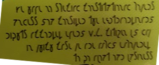

This is going to get weird right from the start. 1o57 even apologized about the lanyards before Defcon started and that was a good call. I have been thinking about how to explain this without sounding like something out of 12 Monkeys, not sure I can.
There were 6 total lanyards this year.
3 had this
and 3 had this
Here is all six of the @#$ things
These symbols are THIS created by Lewis Carroll.
Any one who has tried, as I have often done, the process of getting out of bed at 2 a.m. in a winter night, lighting a candle, and recording some happy thought which would probably be otherwise forgotten, will agree with me it entails much discomfort. All I have now to do, if I wake and think of something I wish to record, is to draw from under the pillow a small memorandum book containing my Nyctograph, write a few lines, or even a few pages, without even putting the hands outside the bed-clothes, replace the book, and go to sleep again.
– Lewis Carroll, Letter to The Lady magazine in October 1891
Here is the "square alphabet" a nyctograph
This is the how it translates
All 3 lanyards with Nictographic Squares:
Skull(22) - WAITASNOTIPFITSPADPICK
Dial(20) - WARPTORNRIFTIMSECURE
Key(13) - EXISTOVEREXPO
These litte gems
are from HERE.
A short by Edgar Allan Poe about this substitution cipher.
And this
5 2 - † 8 1 3 4 6 , 7 0 9 * ‡ . $ ( ) ; ? ¶ ] ¢ : [
A B C D E F G H I J K L M N O P Q R S T U V W X Y Z
The above gold bug cipher lanyard translates to
0 4 2 * † 7 4 2 † ¶ 4 † 2
L H B N D K H B D V H D B
All 3 lanyards with Gold Bug:
Disk(22) - GNDTOZEDNPMXDCJKXVLMYE
Skull(20) - KRHLMVDFDFXDCHBKHDCV
Disk(13) - LHBNDKHBDVHDB
Notice the string length of them. I will get to that little tidbit in a after a short interlude ( yes, already).
The first lanyard picture at the top of the page is 1o57's
On Wednesday 1o57 tweeted out this picture.
I was at hotel when I saw this and about lost my lunch when I saw the reflection in the glass of DC23 on his lanyard. Since I had already scoped out the hotels and had been to the business center I knew where he was. I estimate I got to his location from when he tweeted no more that 2 minutes had passed.
I barged into the business center and the women behind the counter, I think she was under the impression I was there to rob the place, to quickly ask if I needed help. Out of breath pointing at 1o57’s lanyard, I replied “No, I am here for that”
And that is the story of the first pic of the first lanyard of Defcon 23.
Back to the show.
Now that we have the lanyards figured out we have to do something with them. You need to be in the right state of mind to get this.
Step 1, get a sturdy keyboard.
Step 2, get drunk.
Step 3, drink some more.
Step 4, check to see that your vision is thoroughly trashed, if not repeat step 3.
Step 5, put each index finger of each hand on a letter on the keyboard.
Step 6, shake your head back and forth.
Step 7, look down.
Being drunk and dizzy your vision should show your fingers merged at the intersection of another letter. That is how you solve the lanyard puzzle That being said, since we have been through this process multiple times I have some pretty pictures of how to do this the lame way.
Here are 2 lanyards that match up with the same number of characters.
Here is what it looks like the lame way:
Disk(13) - LHBNDKHBDVHDB - Y-axis
Key (13) - EXISTOVEREXPO - X-axis
-------------------------------------
ONTHEINTERNET
Think of each set of letters from matching lanyards as X and Y on a graph. Where X and Y intersect is the letter needed. The only problem is we don't have a graph we have a freaking keyboard.
(E,L) = O
(X,H) = N
(I,B) = T
Doing this for ALL the lanyards results in:
IF YOU REVERSE ENGINEER
THE PLACE YOU SEEK IS FOUND
ON THE INTERNET
What the crap is that..I know..riddles. ARRGGGGG After some trial and error and error you get
reenigne.engineerEngineer is a the top level domain and reenigne ,engineer reversed, is the domain. Get it?! took us a bit. These are always the hardest to figure out.
At reenigne.engineer you get this image:
The image name is Jimmy.jpg and the title of the page “Star me kitten” , both are are obscure reference to Xfiles.
Well now what? The “deflated enigmatic origami” statement is referring to a the mysteryfolder.rar file which was on the Defcon 23 cd. Yeah..seriously.
We need a password. From the above reference in the jimmy.jpg and A LOT of error and some trial. The password is Thetruthisoutthere. with the period at the end.
The mysteryfolder.rar has 3 files but only this is the only we used.
YUP..there it is folks..what the &@(%.
It looks worse than it is. Using Logic Gates with binary hex you get:
Apply 3E01A to LostboY.net/ you get http://lostboy.net/3E01A
This was just about the toughest thing we had. The idea is to search for these items online and get to this: ?????????
We couldn’t do it. I actually still can’t. LOL. Lucky for us 1o57 tweet out the url.
There are a couple of things here that come together. First, the statement at the bottom of the page:
It's moving to think of all of you
helping a
number of little girls
find their way...
I'll be sure to keep a
record
of your good deeds.
This is referring to the Badge. I will get to that after this. But First, the rabbit hole to get this site was deep. Once you know that the shopping list is referring to the movie and this comment on the source of the page:
Is the answer written on the stars?
Digging around you end up here (at least for us) Bedknobs and Broomsticks
then you will notice a link for The Star of Astoroth. Which is this:
Oh look, the answer is written on the star!
Treguna Mekoides Trecorum Satis Dee
Yeah, I know. I will give you a second to recover.
…
…
…
Done?
We are just getting started!
Keep the above to pieces of information at hand.
On page 2 of the Defcon program this little tidbit is at the bottom:
VgjbhyqagorQrspbajvgubhgbhetbbqsevraqPnrfne
(fbzrgenqvgvbafjvyyarireqvr)
Hjvyyxabjjung2qbjuraHhafpenzoyr "Ubjqnqqlvfqbvat"
WFST HDXE HGY BNK BAWH QJG PSOR WNFATG IDDW OQUHVNKINGCY GQG CTUK.
The top string is our old pal rotty (ROT13 )
ItwouldntbeDefconwithoutourgoodfriendCaesar
(sometraditionswillneverdie)
Uwillknowwhat2dowhenUunscramble "Howdaddyisdoing"
It wouldnt be Defcon without our good friend Caesar (some traditions will never die) U will know what 2 do when U unscramble "Howdaddyisdoing"
This is a from the movie L.A. Story. In the movie Steve Martin has multiple conversation with an electronic message board on the freeway.
I never figured out the riddle.
"How Daddy is doing."
It's a riddle too tough for me.
- I know it.
It's an English crossword clue.
See, unscramble means rearrange.
Change the "s" with the "h,"
move the "ing" after the "s,"
put the "do" after them.
Swap the "h" and the "s."
And put the "i" behind the "d."
"Sing Doo Wah Diddy?"
That's the mystery of the ages?
The answer is LASTORY ...but this is one of those things where you know where it comes from but not exactly what to do with it. Lucky for us, 1o57 tweeted out this disturbing picture
Somethings you just can’t unsee
But it was a direct giveway to Quagmire III which is a keyed Vigenere cipher. So apply Quagmire 3 using keyed alphabet and index of LASTORY to the string in the program
WFST HDXE HGY BNK BAWH QJG PSOR WNFATG IDDW OQUHVNKINGCY GQG CTUK
you get:
WELL DONE GET THE BLUE KEY PASSPHRASE FROM OPPENHEIMERS BIG BANG
The answer to this is quote from Oppenheimer, the BLUE passkey.
NOW I AM BECOME DEATH THE DESTROYER OF WORLDS
Ok..After Quagmire and DESTROYER OF WORLDS..I think we need a palate cleanser...take a deep breath and keep moving down it should put you in better spirits.
...As you have most likely heard by now, this year’s Defcon badge was a record. Yes, an actual !@#$ record. So unless you happen have team members driving in or scouring vegas for a record player you were almost screwed.
This was posted pretty quickly though.
Audio of the BadgeIt has 3 parts to it. The first, the hacker manifesto. Second, a little girl saying a string of numbers. Third, and dam you 1o57, DTMF tones.
Here are the numbers:
-26-18-10-14-21-05-17-13-17-19-22-22-20-19-22-22-08-07-08-22
-12-25-01-14-24-12-20-02-24-12-24-10-07-07-06-14-18-02-22-25
-18-03-06-24-07-25-11-09-16-14-22-12-01-24-09-25-02-17-22-09
-26-24-05-05-20-24-07-23-17-18-04-13-02-11-22-23-24-11-01-07
-02-11-19-06-to JUN 18, 2024-13-12-26-09-18-13-16-24-14-12-18-05
Yeah that is a lot of !@#$ numbers to transcribe.
Here are the convert DTMF tones:
105710571057352663863332661057105710577335397277747
273479327384368742625377263932738433732637763373267
We covered the lanyard, the badge ,the program, and now the freaking keycards. This year 6 key cards from 5 different hotels had some weird looking stuff in it. Caesar’s Palace ( 2 cards) ,Linq,Bally’s,Paris, and Flamingo.
These weird made up looking sybmols ended up being Telugu
?!#$!@#$!@#$!?????? This was messed up.
Note, the circle on each circle and it’s position. The is the order in which the Telugu must be translated.
Through more error and error, we were able to tweak out a word (based on hints from 1o57) for each card. This is what we got:
1) LITTLE
2) GIRL
3) RECORD
4) MISSING
5) 2
6) 5
Remember the girls voice from the record. She started her numbers with a dash. Meaning she missed a number that number was 25. Put 25 at the beginning of the string of numbers for later use.
Now lets take a look at the shorthand looking symbols on the records.
This misprint looking script is actually the Shavian alphabet.
Translating each badge gets you this:
goon: Nothing real can defeat us Nothing unreal exists
speaker: Be cool But care
press: If hes not one thing hes another
human: Mystery is the source of all true art and science
contest: there are times when verbal ingenuity is not enough
artist: live like youre gonna die tomorrow and study like youre gonna live forever
vendor: We have no special constitutional powers unless you consider the extraordinary rights
accorded every U.S. citizen by law in which case we are amply empowered to go about our business.
These are quotes from The Adventures of Buckaroo Banzai Across the 8th Dimension, If you haven’t seen it see it..NOW. I am still waiting for the sequel along with the Remo Williams sequel.
Ok. You're gonna be pissed or maybe not, but I have to stop and explain something.
From here you have all the tools you need to solve the rest of the challenge. I am NOT going to write up the solution rest puzzles because I do not feel it is my right to disclose these to the public. 1o57 has an entry point into ongoing challenges that will start up at some near time in the future. Solving these gives you entrance into this academy. If you are interested do so. DO SO.
We would all like to thank Defcon and 1o57 for actively putting up with us and to thank all the people we never see or hear about.
ANNNNDDD I'm OUT